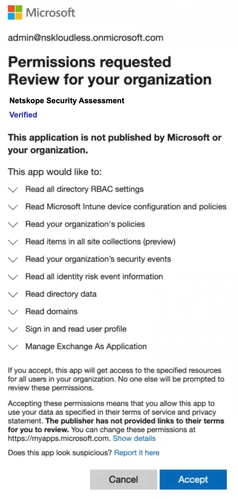
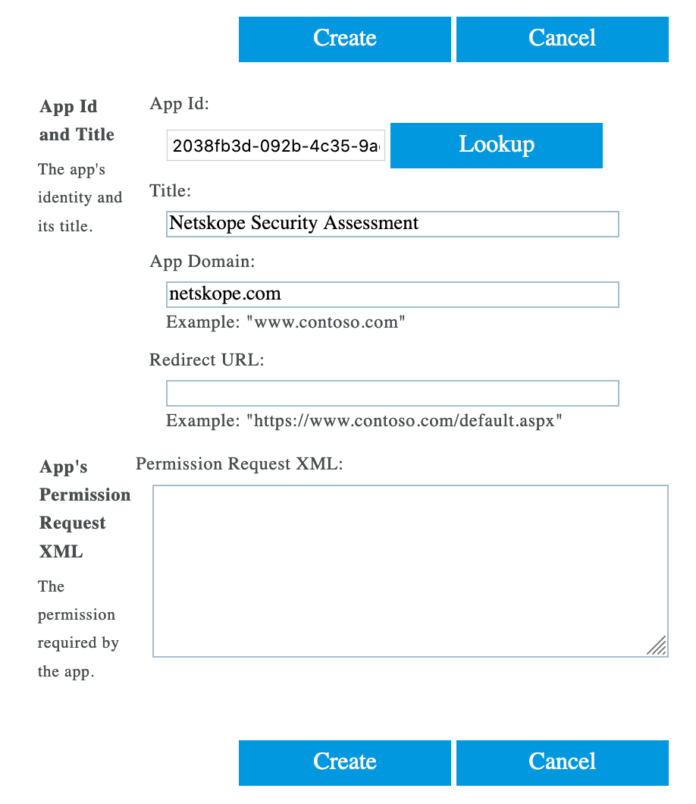
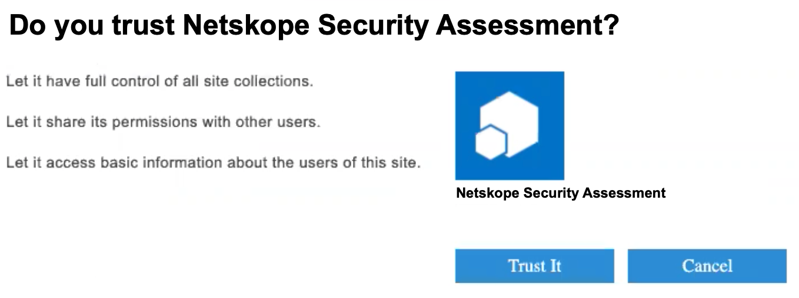

Configure Microsoft 365 Instance for Security Posture
Note
Netskope requires a minimum set of Microsoft 365 licenses to scan through your Microsoft 365 environment. They following licenses are supported:
Microsoft 365 A3, A5
Microsoft 365 E3, E5
Microsoft 365 F1, F3
Netskope can support other Microsoft 365 licenses too as long as additional licenses are obtained for Microsoft Intune and Azure Active Directory Premium P1 edition.
The installation instruction describes how to integrate your Microsoft 365 account with Netskope. There are 4 broad procedures involved:
Step 1: Configure SharePoint Tenant to Allow Custom App Authentication
Step 2: Grant Access to Microsoft 365 Account
Step 3: Add Azure AD Roles
Step 4: Add SharePoint Admin Permissions for the SharePoint Client-side Object Model (CSOM) API
Step 1: Configure SharePoint Tenant to Allow Custom App Authentication
If you are setting up the Microsoft 365 instance for the first time on a new Microsoft 365 account, you may need to enable custom app authentication for your SharePoint tenant. Microsoft has recently disabled apps using an Azure Access Control (ACS) app-only access token by default. If so, follow the steps below to enable custom app authentication.
You can change the behavior by running set-SPOTenant -DisableCustomAppAuthentication $false (needs the latest SharePoint admin PowerShell). To do so, follow the steps below:
Note
The following steps are performed on a Windows device.
Install the latest version of PowerShell on Windows. Follow the instructions here.
Start PowerShell as an administrator on the Windows device, and run the following commands:
Install-Module -Name Microsoft.Online.Sharepoint.PowerShell
$adminUPN="<the full email address of the global administrator account, example: admin@sumoskope.onmicrosoft.com>"
Note
Fill in the value for the $adminUPN variable (replacing all the text between the quotes, including the < and > characters).
$orgName="<name of your Microsoft 365 organization, example: sumoskope>"
Note
Fill in the value for the $orgName variable (replacing all the text between the quotes, including the < and > characters).
$userCredential = Get-Credential -UserName $adminUPN -Message "<type the password>"
Note
When prompted with the Windows PowerShell credential request dialog box, type the password for the global administrator account.
To check the value of DisableCustomAppAuthentication, run the following commands:
Connect-SPOService -Url https://$orgName-admin.sharepoint.com
Get-SPOTenant
Look for the DisableCustomAppAuthentication parameter. It should be set to True.
Note
If you do not see the DisableCustomAppAuthentication parameter, execute the Install-Module -Name Microsoft.Online.Sharepoint.PowerShell -Force command and follow the steps from 2b.
Run the following command to set the DisableCustomAppAuthentication value to false:
Set-SPOTenant -DisableCustomAppAuthentication $false
Verify that the parameter is set to false. To do so, run the following command:
Get-SPOTenant
Look for the DisableCustomAppAuthentication parameter. It should be set to False.
Step 2: Grant Access to Microsoft 365 Account
To authorize Netskope to access your Microsoft 365 account, follow the steps below:
Log in to the Netskope tenant UI:
https://<tenant hostname>.goskope.comand go to Settings > API-enabled Protection > SaaS.Select the Microsoft 365 icon, and then click Setup Instance.
The Setup Instances window opens. Enter the following details:
For instance name, enter the fully qualified domain name (FQDN) of your Microsoft 365 account. For example, if you use https://domain.sharepoint.com to login, then specify domain.sharepoint.com as the FQDN in the app instance field.
Note
To find the FQDN of your Microsoft 365 account, log in to your Microsoft 365 account and then:
Click the launch icon.
Click the SharePoint app.
Copy the FQDN text (remove the "https://" and the path after the FQDN text "/")

Instance Type: Select the Security Posture checkbox. Select this option to allow Netskope to continuously scan through your SaaS app to identify and remediate risky SaaS app misconfigurations and align security posture with best practices and compliance standards.
Also, you have the option to run the policy at intervals (15 minutes, 30 minutes, 45 minutes, and 60 minutes).
Click Save, then click Grant Access for the app instance you just created.
After clicking Grant Access, you will be prompted to log in with your global administrator username and password, and then Accept the permissions and click Close.
 The Netskope Security Assessment app is installed in Azure AD with additional permissions once you grant the Microsoft 365 app. Going forward, the Microsoft 365 app instance will utilize the new Graph APIs from Microsoft.
Refresh your browser, and you should see a green check icon next to the instance name.
Important
If you have newly set up your Microsoft 365 account, it can take 2 to 4 days to generate the Microsoft Secure Score report for your Microsoft 365 account. Netskope SSPM incorporates data from Microsoft Secure Score and therefore requires the secure score report to be generated. If you do not see any data populated in the Netskope UI dashboard (API Data Protection > COMPLIANCE > Security Posture), wait till the Microsoft Secure Score report is generated. You can view the completion of Microsoft Secure Score on your Azure portal under Azure AD Identity Secure Score.
Step 3: Add Azure AD Roles
Once you have granted access to Microsoft 365 app, you should assign the Netskope application client ID to the Global Reader role. To do so, follow the steps below:
Log in to portal.azure.com as a global administrator.
Click View under Manage Azure Active Directory.
On the left navigation, click Roles & administrators.
Search for the role Global Reader, and click on the Global Reader role.
Click + Add assignments.
In the search bar, enter the Netskope application client ID 2038fb3d-092b-4c35-9ae6-3f10adb04a6a. Select the Netskope Security Assessment app and click Add.
Step 4: Add SharePoint Admin Permissions for the SharePoint Client-side Object Model (CSOM) API
The following procedure allows Netskope Security Assessment app to access your SharePoint tenants' configuration settings.
Log in to https://<tenant_name>-admin.sharepoint.com/_layouts/15/appinv.aspx. Replace the <tenant-name> with your company's SharePoint domain name. For example, if your SharePoint admin page URL is https://sumoskope-admin.sharepoint.com/, enter https://sumoskope-admin.sharepoint.com/_layouts/15/appinv.aspx. The following page opens:

Under App Id, enter 2038fb3d-092b-4c35-9ae6-3f10adb04a6a and click Lookup. The page gets populated with the following information:
 Under App Domain, enter netskope.com.
Under Permission Request XML, enter the following XML code:
<AppPermissionRequests AllowAppOnlyPolicy="true"><AppPermissionRequest Scope="http://sharepoint/content/tenant" Right="FullControl" /></AppPermissionRequests>
Click Create.
On the next page, review the permissions and click Trust It.

This will create the app permissions necessary for the Netskope Security Assessment app to access the SharePoint CSOM APIs.
Next, you should configure a security posture policy. To do so, see Security Posture Policy Wizard.